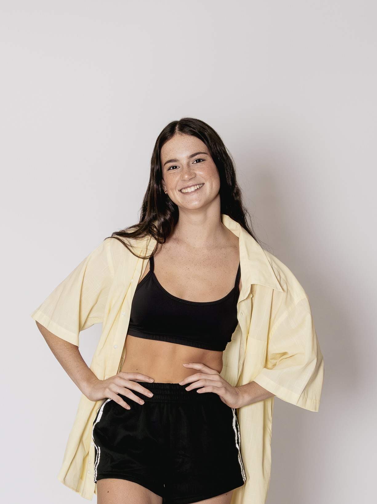
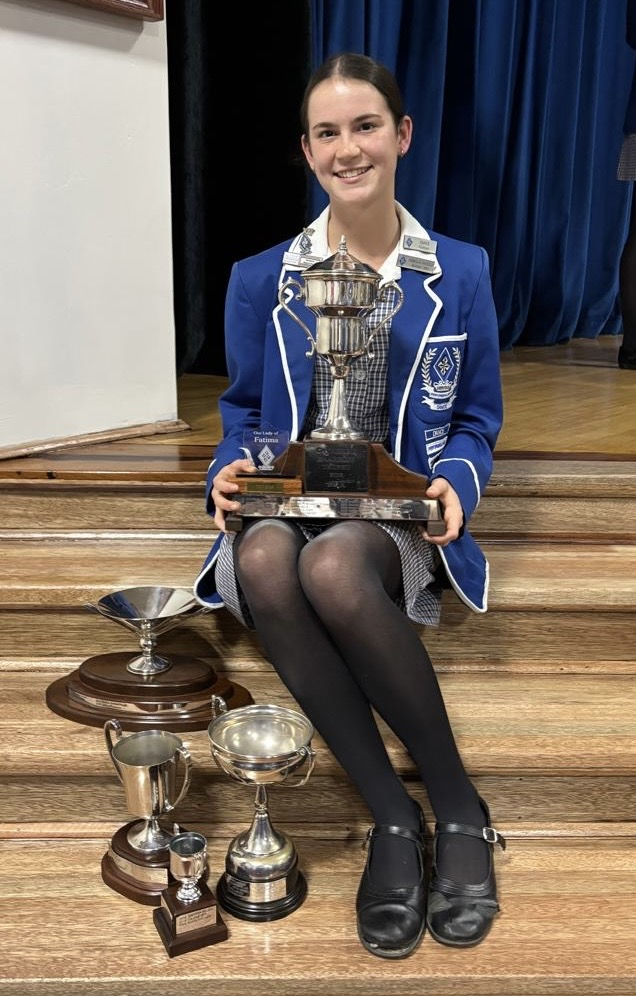

Giselle Gould
Aspiring Data Scientist
About Me:
My name is Giselle Gould and I am a 19-year-old currently on a gap year and exploring my interests and future career. I finished school as the DUX scholar and have always been a driven and determined young lady.
I love to be challenged and to learn new things, and I take great pride in all of my work. My whole life I have been a dancer and it is one of my greatest passions. Through my dedication to dance I have learnt commitment, discipline and confidence, which are lessons that I cherish and utilise in my everyday life.
I have decided that I am going to attend Stellenbosch University next year to study a Bachelor of Data Science. I am excited to develop my technical skills and explore opportunities within the field of data science.
Contact Me:
Email: giselleroseg@gmail.com
Phone: 066 081 2344
Location: Cape Town, South Africa
GitHub: GitHub Profile

My Education:
Our Lady of Fatima Dominican Convent School
National Senior Certificate
- Bachelor Degree Pass
- 9 Distinctions
- DUX Scholar
Tertiary Education:
Red and Yellow Business School
Data Analysis Course
Completed: April 2026
Skills & Competencies:
- Python programming
- SQL
- HTML and CSS
- Git and GitHub
- Data analysis
- Problem solving
- Communication
- Time management
- Teamwork
- Leadership
Personal Strengths:
- Driven and determined
- Hard-working
- Disciplined
- Willing to learn
- Creative
- Confident communicator

Work Experience:
Dance Choreographer
Northwood School Musical
- Choreographed dance routines for a school musical production.
- Taught choreography to members of the cast.
- Worked with a team to prepare performers for rehearsals and performances.
- Developed leadership, communication and organisational skills.
Dance
Dance Training and Performance
- Extensive experience in Modern, Tap, Contemporary and Hip Hop dance.
- Regularly participated in rehearsals and performances.
- Developed strong discipline, commitment and teamwork through years of dance training.
Interests:
- Data Science
- Technology
- Programming
- Dance and performing arts
- Learning new skills
- Travel
Career Goals:
My goal is to develop a career in data science and technology. I am particularly interested in developing my programming, data analysis and problem-solving abilities while gaining practical industry experience.